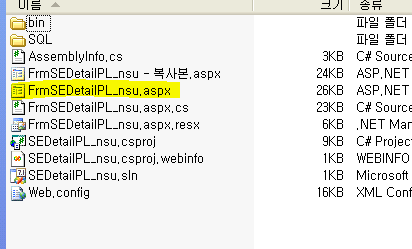
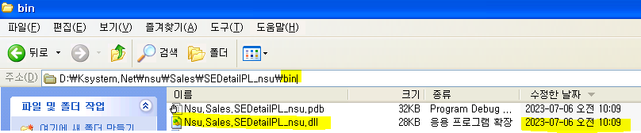

주의사항
58번 파일 위치
D - Ksystem.Net => GNI
D - Ksystem.New => Smart
원격 접속 시 끄기전에 켜놓았던 프로그램들 끄기
소스세이프 폴더 째로 체크아웃
aspx는 실서버에서 가져오는게 좋음 (일단 그전에 소스세이프랑 비교)
-
.csproj 파일 열기
-
오른쪽 aspx 더블클릭해서 화면단 볼 수 있음 (시트 x)
-
우클릭 - HTML 소스보기 - aspx 소스 볼 수 있다
-
F7 눌러서 cs 파일 열기
-
F5 누르면 dll 파일 생성
-
aspx 파일 / bin - dll 파일 두개 옮겨야함

